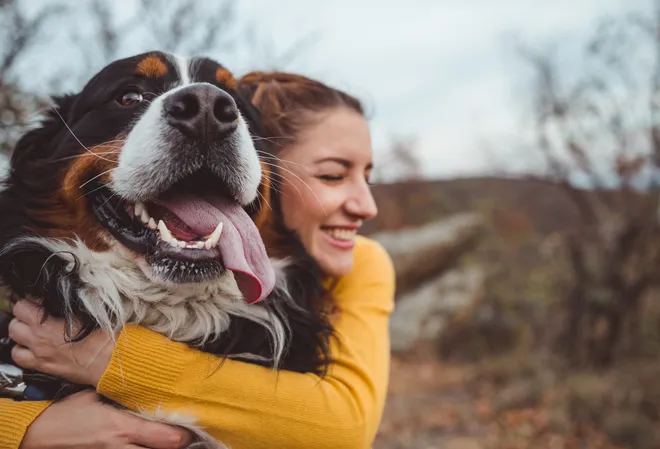

10 Science-Based Benefits of Owning A Dog
- Dogs make us feel less alone.
- Dogs are good for your heart.
- Dogs help you stop stressing out.
- Dogs help us cope with crisis.
- Dogs encourage you to move.
- Dogs make you more atttractive - even virtually.
- Dogs make us more social.
- Dogs are so adorable they make us love them.
- Dogs make us happier.
- Dogs help seniors with cognitive function and social interaction.
More information here: American Kennel Club
Dogs Are Not Only Amazing Pets
Dogs perform many roles for people, such as hunting, herding, pulling loads, protection, assisting police and the military, companionship and aiding disabled individuals.
People often enter their dogs in competitions, such as breed-conformation shows or sports, including racing, sledding and agility competitions. In conformation shows, also referred to as breed shows, a judge familiar with the specific dog breed evaluates individual purebred dogs for conformity with their established breed type as described in the breed standard.
Dogs were depicted to symbolize guidance, protection, loyalty, fidelity, faithfulness, alertness, and love. In China, Korea and Japan, dogs are viewed as kind protectors. In mythology, dogs often serve as pets or as watchdogs. In Christianity, dogs represent faithfulness. The view on dogs in Islam is mixed, with some schools of thought viewing it as unclean, however, they are widely accepted to perform their role as pets.
Some Dog Breeds Perfect for Apartment Dwellers
- Basenji
- French Bulldog
- Chihuahua
- Boston Terrier
- Pug
- German Spitz
- Welsh Pembroke Corgi
- ... and many other dogs as long as you love them a lot and go for long walks with them!